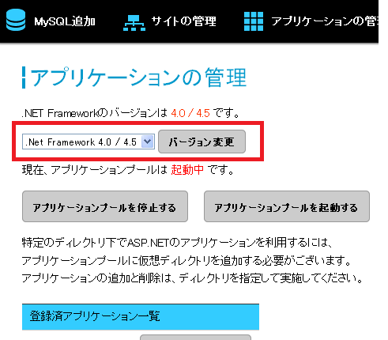
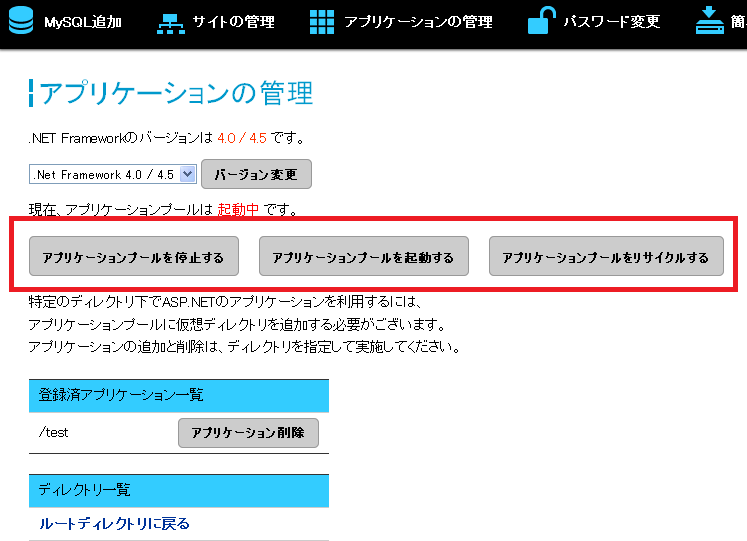
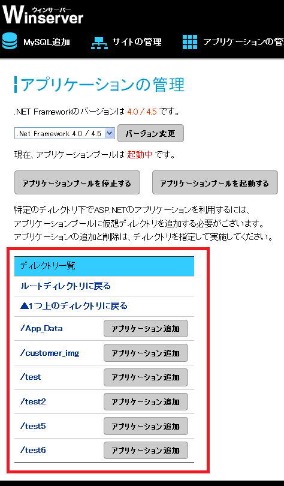
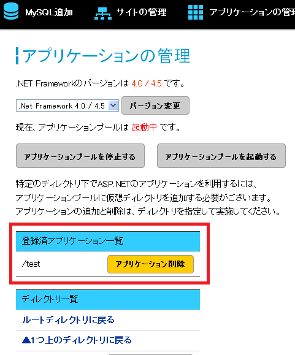

.NET Frameworkのバージョンを変更するには、
Webコントロールパネルの「アプリケーションの管理」から、該当するボタンを押してください。

アプリケーションプールの起動、停止、リサイクルを行うには、
Webコントロールパネルの「アプリケーションの管理」から、該当するボタンを押してください。

特定のディレクトリ下でASP.NETを利用するには、
アプリケーションプールにディレクトリを追加する必要がございます。
ディレクトリを追加するには、Webコントロールパネルの「アプリケーションの管理」のフォルダ一覧から、
対処のディレクトリを指定して、「アプリケーション追加」ボタンを押してください。

また、一度追加したアプリケーションを削除したい場合は、「アプリケーション削除」ボタンを押してください。
